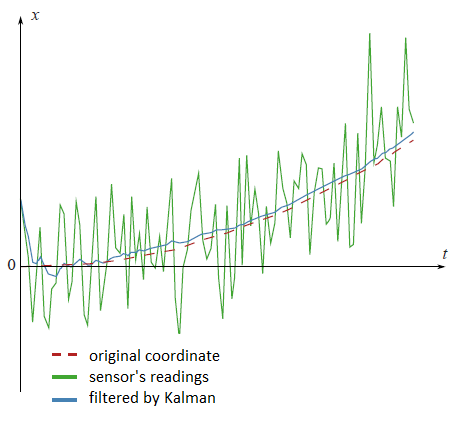
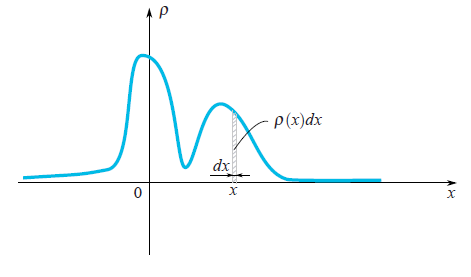
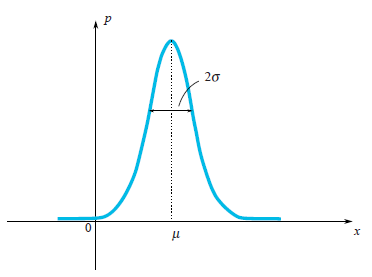
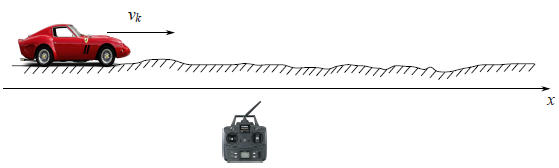
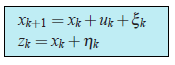
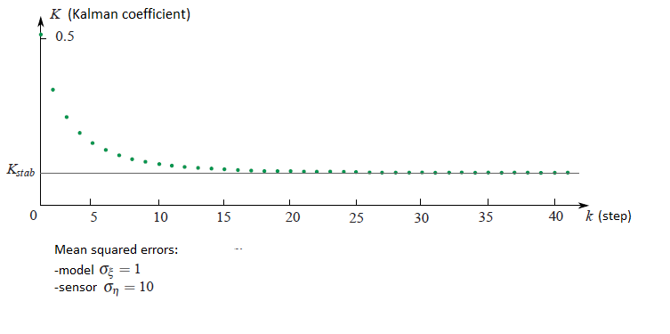
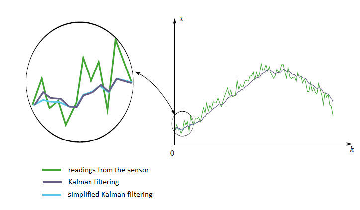

Kalman Filter

There are a lot of different articles about the Kalman filter, but it is difficult to find one that explains where all the filtering formulas come from. I think that without understanding this, the subject becomes completely incomprehensible. In this article, I will try to explain everything in a simple way.
The Kalman filter is a very powerful tool for filtering different kinds of data. The main idea behind it is that one should use information about the physical process. For example, if you are filtering data from a car's speedometer, then its inertia gives you reason to treat a large speed deviation as a measurement error. The Kalman filter is also interesting because, in some way, it is the best filter. We will discuss precisely what this means. At the end of the article, I will show how it is possible to simplify the formulas.
Preliminaries
First, let us recall some definitions and facts from probability theory.
Random variable
When one says that a random variable $\xi$ is given, it means that it may take different values. Different values come with different probabilities. For example, if someone rolls a die, then the set of values is discrete: $\{1,2,3,4,5,6\}$. When you deal with the speed of a moving particle, you should work with a continuous set of values. We denote the values that result from each experiment (measurement) by $x_1, x_2,...$, but sometimes we use the same letter as we use for the random variable $\xi$. In the case of a continuous set of values, a random variable is characterized by its probability density function $\rho(x)$. This function gives the probability that the random variable falls within a small neighborhood $dx$ of the point $x$. As we can see in the picture, this probability is equal to the area of the hatched rectangle below the graph $\rho(x)dx$.

Quite often in life, random variables have a Gaussian distribution, with probability density $\rho(x)\sim e^{-\frac{(x-\mu)^2}{2\sigma^2}}$.

We can see that the bell-shaped function $\rho(x)$ is centered at the point $\mu$ and its characteristic width is around $\sigma$.
Since we are talking about the Gaussian distribution, it would be a sin not to mention where it comes from. Just as the numbers $e$ and $\pi$ are firmly established in mathematics and can be found in the most unexpected places, the Gaussian distribution has deep roots in probability theory. The following remarkable statement partly explains the presence of the Gaussian distribution in many processes:
Let a random variable $\xi$ have an arbitrary distribution (in fact, there are some restrictions, but they are not very restrictive). Let us perform $n$ experiments and calculate a sum $\xi_1+...+\xi_n$ of the observed values. Let us perform many experiments. It is clear that every time we will get a different value of the sum. In other words, this sum is a random variable with its own distribution. It turns out that, for sufficiently large $n$, the distribution of this sum tends to a Gaussian distribution. By the way, the characteristic width of the bell grows like $\sqrt n$. Read more on Wikipedia:
Central limit theorem. In real life, there are many values that are sums of a large number of independent and identically distributed random variables. Thus, these values have a Gaussian distribution.
Mean Value
By definition, the mean value of a random variable is a value that we get in the limit if we perform more and more experiments and calculate the mean of the observed values. A mean value is denoted in different ways: mathematicians denote it by $E\xi$ (expectation), while physicists denote it by $\overline{\xi}$ or $<\xi>
$. We will use the mathematicians' notation.
For instance, the mean value of a Gaussian distribution $\rho(x)\sim e^{-\frac{(x-\mu)^2}{2\sigma^2}}$ is equal to $\mu$.
Variance
For a Gaussian distribution, we can clearly see that the random variable tends to fall within a certain region around its mean value $\mu$. Let us look at the Gaussian distribution once again:
In the picture, one may see that the characteristic width of the region where values mostly fall is $\sigma$. How can we estimate this width for an arbitrary random variable? We can draw a graph of its probability density function and visually evaluate the characteristic range. However, it would be better to choose a precise algebraic method for this evaluation. We may find the mean deviation from the mean value: $E|\xi-E\xi|$. This value is a good estimate of the characteristic deviation of $\xi$. However, we know very well how problematic it is to use absolute values in formulas; thus, this formula is rarely used in practice.
A simpler approach (from a computational point of view) is to calculate $E(\xi-E\xi)^2$.
This value is called the variance and is denoted by $\sigma_\xi^2$. The square root of the variance is a good estimate of a random variable's characteristic deviation. It is called the standard deviation.
For instance, one can compute that for the Gaussian distribution $\rho(x)\sim e^{-\frac{(x-\mu)^2}{2\sigma^2}}$, the variance is equal to $\sigma^2$; thus, the standard deviation is $\sigma$. This result really corresponds to our geometrical intuition. In fact, a small trick is hidden here. In the definition of the Gaussian distribution, you see the number $2$ in the denominator of the expression $-\frac{(x-\mu)^2}{2\sigma^2}$. This $2$ is there deliberately, so that the standard deviation $\sigma_\xi$ is exactly equal to $\sigma$. The formula of the Gaussian distribution is written in such a way that one can compute its standard deviation.
Independent random variables
Random variables may depend on each other or not. Imagine that you are throwing a needle on the floor and measuring the coordinates of both ends. These two coordinates are random variables, but they depend on each other, since the distance between them should always be equal to the length of the needle. Random variables are independent of each other if the result of the first one does not depend on the result of the second. For two independent variables $\xi_1$ and $\xi_2$, the mean of their product is equal to the product of their means: $E(\xi_1\cdot\xi_2) = E\xi_1\cdot\xi_2$
Proof
For instance, having blue eyes and finishing school with high honors are independent random variables. Let us say that $20\% = 0.2$ of people have blue eyes and $5\%=0.05$ of people finish school with high honors. So there are $0.2\cdot 0.5 = 0.01 = 1\%$ of people with blue eyes and high honors. This example helps us understand the following. For two independent random variables $\xi_1$ and $\xi_2$ that are given by their probability densities $\rho_1(x)$ and $\rho_2(y)$, the joint probability density $\rho(x,y)$ (the first variable takes the value $x$ and the second takes the value $y$) can be found using the formula
$$\rho(x,y) = \rho_1(x)\cdot\rho_2(y)$$
It means that
$$
\begin{array}{l}
\displaystyle E(\xi_1\cdot\xi_2)=\int xy\rho(x,y)dxdy=\int xy\rho_1(x)\rho_2(y)dxdy=\\ \displaystyle \int x\rho_1(x)dx\int y\rho_2(y)dy=E\xi_1\cdot E\xi_2
\end{array}
$$
As you can see, the proof applies to random variables that have a continuous spectrum of values and are given by their probability density functions. The proof is similar in the general case.
Kalman filter
Problem statement
Let us denote by $x_k$ a value that we intend to measure and then filter. It can be a coordinate, velocity, acceleration, humidity, temperature, pressure, etc.
Let us start with a simple example, which will lead us to the formulation of the general problem. Imagine that you have a radio-controlled toy car that can move only forward and backward. Knowing its mass, shape, and other parameters of the system, we have calculated how the control joystick affects the car's velocity $v_k$.

The coordinate of the car would be given by the following formula:
$$x_{k+1}=x_k+v_kdt$$
In real life, we cannot have a precise formula for the coordinate, since small disturbances such as wind, bumps, and stones on the road act on the car, so its real speed will differ from the calculated one. Therefore, we add a random variable $\xi_k$ to the right-hand side of the last equation:
$$x_{k+1}=x_k+v_kdt+\xi_k$$
We also have a GPS sensor on the car that tries to measure the car's coordinate $x_k$. Of course, there is an error in this measurement, which is a random variable $\eta_k$. Thus, the sensor gives us incorrect data:
$$z_k=x_k+\eta_k$$
Our aim is to find a good estimate of the true coordinate $x_k$, given the sensor's incorrect data $z_k$. We will denote this estimate by $x^{opt}$.
In general, the coordinate $x_k$ may stand for any value (temperature, humidity, ...) and the control input will be denoted by $u_k$ (in the example with a car, $u_k = v_k\cdot dt$). The equations for the coordinate and the sensor measurements are as follows:

(1)
Let us discuss what we know in these equations.
- $u_k$ is a known value that controls the evolution of the system. We know it from the model of the system.
- The random variable $\xi$ represents the error in the model of the system, and the random variable $\eta$ is the sensor's error. Their distribution laws do not depend on time (or on the iteration index $k$).
- The means of errors are equal to zero: $E\eta_k = E\xi_k = 0$.
- We might not know the distribution law of the random variables, but we do know their variances $\sigma_\xi$ and $\sigma_\eta$. Note that the variances do not depend on time (or on $k$), since the corresponding distribution laws do not, either.
- We suppose that all random errors are independent of each other: the error at time $k$ does not depend on the error at time $k'$.
Note that a filtering problem is not a smoothing problem. Our aim is not to smooth the sensor data; we just want to obtain a value that is as close as possible to the real coordinate $x_k$.
Kalman algorithm
We will use induction. Imagine that at step $k$, we have already found the filtered sensor value $x^{opt}$, which is a good estimate of the real coordinate $x_k$. Recall that we know the equation that controls the real coordinate:
$$x_{k+1} = x_k + u_k + \xi_k$$
Therefore, before getting the sensor's value, we can say that it will be close to $x^{opt}+u_k$. Unfortunately, we cannot say anything more precise so far. At step $k+1$, we have an imprecise reading from the sensor, $z_{k+1}$.
Kalman's idea is the following. To obtain the best estimate of the real coordinate $x_{k+1}$, we should find a middle ground between the reading from the imprecise sensor $z_{k+1}$ and $x^{opt}+u_k$ - our prediction of what we expect to see on the sensor. We assign a weight $K$ to the sensor's value and $(1-K)$ to the predicted value:
$$x^{opt}_{k+1} = K\cdot z_{k+1} + (1-K)\cdot(x_k^{opt}+u_k)$$
The coefficient $K$ is called the Kalman coefficient. It depends on the iteration index, and strictly speaking, we should write $K_{k+1}$. But to keep the formulas simple, we omit the index of $K$.
We should choose the Kalman coefficient in such a way that the estimated coordinate $x^{opt}_{k+1}$ is as close as possible to the real coordinate $x_{k+1}$.
For instance, if we know that our sensor is very precise, then we trust its reading and give it a large weight ($K$ is close to one). Conversely, if the sensor is not precise at all, then we rely on our theoretically predicted value $x^{opt}_k+u_k$.
In general, we should minimize the error of our estimate:
$$e_{k+1} = x_{k+1}-x^{opt}_{k+1}$$
We use equations (1), which are shown in the blue frame, to rewrite the equation for the error:
$$e_{k+1} = (1-K)(e_k+\xi_k) - K\eta_{k+1}$$
Proof
$$
\begin{array}{l}
{
e_{k+1}=x_{k+1}-x^{opt}_{k+1}=x_{k+1}-Kz_{k+1}-(1-K)(x^{opt}_k+u_k)=\\ =x_k+u_k+\xi_k-K(x_k+u_k+\xi_k+\eta_{k+1})-(1-K)(x^{opt}_k+u_k)=\\=(1-K)(x_k-x_k^{opt}+\xi_k)-K\eta_{k+1}=(1-K)(e_k+\xi_k)-K\eta_{k+1}
}
\end{array}
$$
Now it is time to discuss what the expression "to minimize the error" means. We know that the error is a random variable, so each time it takes a different value. There is no unique answer to this question. This is similar to the case of the variance of a random variable, when we were trying to estimate the characteristic width of its probability density function. So we choose a simple criterion. We minimize the mean square:
$$E(e^2_{k+1})\rightarrow min$$
Let us rewrite the last expression:
$$E(e^2_{k+1})=(1-K)^2(E_k^2+\sigma^2_\xi)+K^2\sigma^2_\eta$$
Key to the proof
Since all random variables in the equation for $e_{k+1}$ are independent of each other and their mean values are $E\eta_{k+1}=E\xi_k=0$, all cross terms in $E(e^2_{k+1})$ are zero:
$$E(\xi_k\eta_{k+1})=E(e_k\xi_k)=E(e_k\eta_{k+1})=0.$$
For instance, $E(e_k\xi_k) = E(e_k)E(\xi_k)=0.$
Also note that the formulas for the variances look much simpler: $\sigma^2_\eta = E\eta^2_k$ and $\sigma^2_\eta = E\eta^2_{k+1}$ (since $E\eta_{k+1}=E\xi_k=0$).
The last expression takes its minimum when its derivative is zero:
$$\displaystyle K_{k+1} = \frac{Ee^2_k + \sigma^2_\xi}{Ee^2_k+\sigma^2_\xi+\sigma^2_\eta}$$
Here we write the Kalman coefficient with its subscript to emphasize the fact that it does depend on the iteration step. We substitute the Kalman coefficient $K_{k+1}$, which minimizes the mean square error, into the equation for $E(e^2_{k+1})$:
$$\displaystyle E(e^2_{k+1}) = \frac{\sigma^2_\eta(Ee^2_k + \sigma^2_\xi)}{Ee^2_k+\sigma^2_\xi+\sigma^2_\eta}$$
Thus, we have solved our problem. We have obtained the iterative formula for computing the Kalman coefficient.
All formulas in one place:
Example
The plot at the beginning of this article shows filtered data from a fictional GPS sensor installed on a fictional car that moves with constant acceleration $a$.
$$x_{t+1} = x_t+ at\cdot dt+ \xi_t$$
Look at the filtered results once again:
The MATLAB code:
clear all;
N=100 % number of samples
a=0.1 % acceleration
sigmaPsi=1
sigmaEta=50;
k=1:N
x=k
x(1)=0
z(1)=x(1)+normrnd(0,sigmaEta);
for t=1:(N-1)
x(t+1)=x(t)+a*t+normrnd(0,sigmaPsi);
z(t+1)=x(t+1)+normrnd(0,sigmaEta);
end;
% Kalman filter
xOpt(1)=z(1);
eOpt(1)=sigmaEta; % eOpt(t) is the square root of the error dispersion (variance).
% It's not a random variable.
for t=1:(N-1)
eOpt(t+1)=sqrt((sigmaEta^2)*(eOpt(t)^2+sigmaPsi^2)/(sigmaEta^2+eOpt(t)^2+sigmaPsi^2))
K(t+1)=(eOpt(t+1))^2/sigmaEta^2
xOpt(t+1)=(xOpt(t)+a*t)*(1-K(t+1))+K(t+1)*z(t+1)
end;
plot(k,xOpt,k,z,k,x)
Analysis
If one looks at how the Kalman coefficient $K_k$ changes with iteration $k$, it is possible to see that it stabilizes at a certain value $K_{stab}$. For instance, if the mean square errors of the sensor and the model are in a ten-to-one ratio, then the plot of the Kalman coefficient as a function of the iteration step would be as follows:

In the next example, we will discuss how this can simplify our life.
Second example
In practice, we often know almost nothing about the physical model of what we are filtering. Imagine that you have decided to filter the measurements from your favourite accelerometer. In fact, you do not know in advance how the accelerometer will move. The only thing you might know is the variance of the sensor's error $\sigma^2_\eta$. In this difficult problem, we might put all unknown information from the physical model into the random variable $\xi_k$:
$$x_{k+1} = x_k + \xi_k$$
Strictly speaking, this kind of system does not satisfy the condition that we have imposed on the random variable $\xi_k$. This is because it contains information about the physics of the motion that is unknown to us. We cannot say that, at different times, the errors are independent of each other and their means are equal to zero. In other words, Kalman theory does not apply to situations of this kind. But we can still try to use the machinery of Kalman theory by choosing reasonable values for $\sigma_\xi^2$ and $\sigma_\eta^2$ to obtain a nice graph of filtered data.
But there is a much simpler way. We saw that as the step $k$ increases, the Kalman coefficient always stabilizes at a certain value $K_{stab}$. So instead of guessing the values of the coefficients $\sigma^2_\xi$ and $\sigma^2_\eta$ and computing the Kalman coefficient $K_k$ using complicated formulas, we can assume that this coefficient is constant and select this constant. This assumption would not greatly affect the filtering results. First, the Kalman machinery is not exactly applicable to our problem, and second, the Kalman coefficient quickly stabilizes at a constant. In the end, everything becomes very simple. We hardly need any formulas from Kalman theory; we just need to select a reasonable value $K_{stab}$ and insert it into the iterative formula
$$x^{opt}_{k+1} = K_{stab}\cdot z_{k+1}+(1-K_{stab})\cdot x_k^{opt}$$
On the next graph, you can see measurements from an imaginary sensor filtered in two different ways. The first method uses all the formulas from Kalman theory. The second method is the simplified one.

We see that there is not a big difference between these two methods. There is a small variation at the beginning, when the Kalman coefficient has not yet stabilized.
Discussion
We have seen that the main idea of the Kalman filter is to choose the coefficient $K$ so that the filtered value
$$x^{opt}_{k+1}= Kz_{k+1}+(1-K)(x^{opt}_k+u_k)$$
is, on average, as close as possible to the real coordinate $x_{k+1}$. We see that the filtered value $x^{opt}_{k+1}$ is a linear function of the sensor's measurement $z_{k+1}$ and the previous filtered value $x^{opt}_k$. But the previous filtered value $x^{opt}_k$ itself is a linear function of the sensor's measurement $z_k$ and the preceding filtered value $x^{opt}_{k-1}$. And so on, until the end of the chain. Thus, the filtered value depends linearly on all previous sensor readings:
$$x^{opt}_{k+1}= \lambda + \lambda_0z_0 + \ldots + \lambda_{k+1}z_{k+1}$$
That is why the Kalman filter is called a linear filter. It is possible to prove that the Kalman filter is the best of all linear filters, in the sense that it minimizes the mean square of the error.
Multidimensional case
It is possible to generalize all of Kalman theory to the multidimensional case. The formulas are a little more elaborate, but the idea behind their derivation remains the same as in one dimension. For instance, in this nice
video, you can see an example.
Literature
You can download the original article written by Kalman here:
http://www.cs.unc.edu/~welch/kalman/media/pdf/Kalman1960.pdf